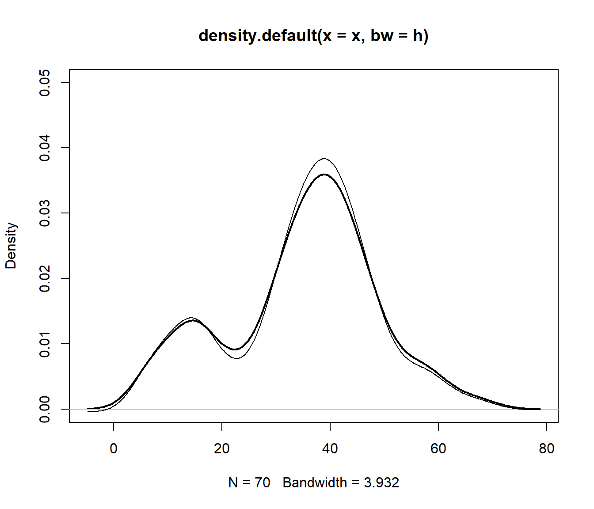
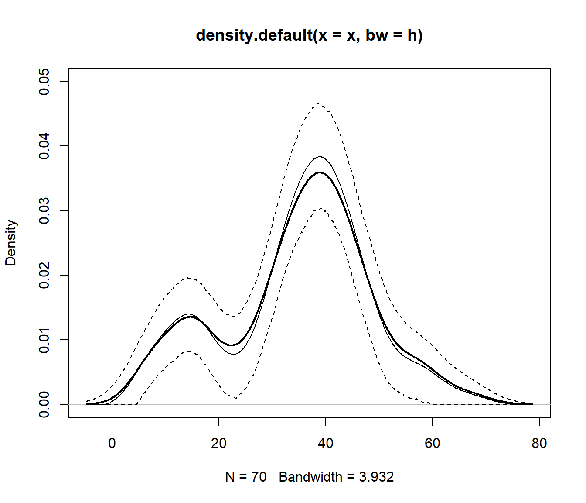
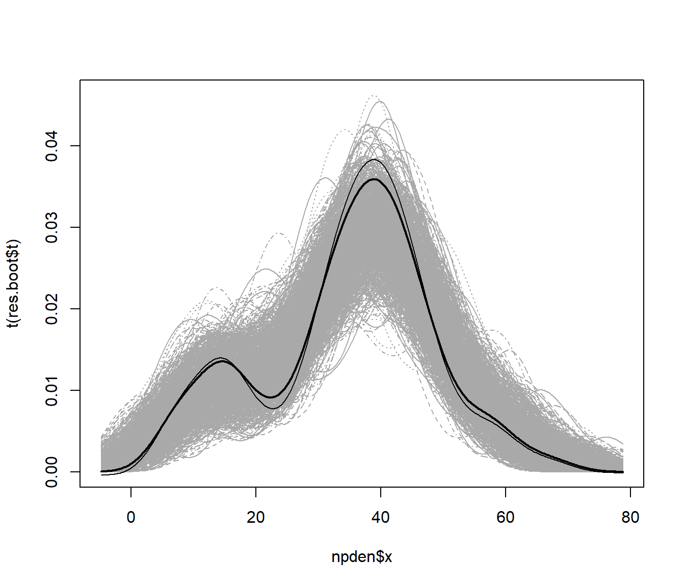
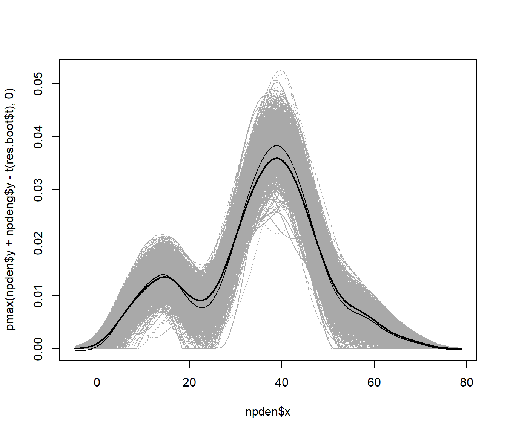

6.6 Ejemplos
En esta sección nos centraremos en el bootstrap en la estimación tipo núcleo de la densidad para la aproximación de la precisión y el sesgo, y también para el cálculo de intervalos de confianza.
6.6.1 Bootstrap y estimación del sesgo
La idea sería aproximar la distribución del error de estimación \(\hat f_h(x) - f(x)\) por la distribución bootstrap de \(\hat f^{\ast}_h(x) - \hat f_g(x)\) (bootstrap percentil básico).
Como se comentó en la Sección 6.3 la ventana \(g\) debería ser asintóticamente mayor que \(h\) (de orden \(n^{-1/5}\)) y la recomendación sería emplear la ventana óptima para la estimación de \(f^{\prime \prime }\left( x \right)\), de orden \(n^{-1/9}\).
Sin embargo, en la práctica es habitual emplear \(g=h\) para evitar la selección de esta ventana (lo que además facilita emplear herramientas como el paquete boot).
Otra alternativa podría ser asumir que \(g \simeq n^{1/5}h/n^{1/9}\) como se hace a continuación.
# Remuestreo
set.seed(1)
n <- length(x)
g <- h * n^(4/45) # h*n^(-1/9)/n^(-1/5)
# g <- h
range_x <- range(npden$x) # Para fijar las posiciones de estimación
B <- 1000
stat_den_boot <- matrix(nrow = length(npden$x), ncol = B)
npdeng <- density(x, bw = g, from = range_x[1], to = range_x[2])
for (k in 1:B) {
# x_boot <- sample(x, n, replace = TRUE) + rnorm(n, 0, g)
x_boot <- rnorm(n, sample(x, n, replace = TRUE), g)
den_boot <- density(x_boot, bw = h, from = range_x[1], to = range_x[2])$y
# Si se quiere tener en cuenta la variabilidad debida a la selección de
# la ventana habría que emplear el mismo criterio en la función `density`.
stat_den_boot[, k] <- den_boot - npdeng$y
}
# Calculo del sesgo y error estándar
bias <- apply(stat_den_boot, 1, mean)
std_err <- apply(stat_den_boot, 1, sd)
# Representar estimación y corrección de sesgo bootstrap
plot(npden, type="l", ylim = c(0, 0.05), lwd = 2)
# lines(npden$x, pmax(npden$y - bias, 0))
lines(npden$x, npden$y - bias)
6.6.2 Estimación por intervalos de confianza
Empleando la aproximación descrita en la Sección 4.2 podemos cálcular de estimaciones por intervalo de confianza (puntuales) por el método percentil (básico).
alfa <- 0.05
pto_crit <- apply(stat_den_boot, 1, quantile, probs = c(alfa/2, 1 - alfa/2))
# ic_inf_boot <- npden$y - pto_crit[2, ]
ic_inf_boot <- pmax(npden$y - pto_crit[2, ], 0)
ic_sup_boot <- npden$y - pto_crit[1, ]
plot(npden, type="l", ylim = c(0, 0.05), lwd = 2)
lines(npden$x, pmax(npden$y - bias, 0)) # Ojo: no es una densidad
lines(npden$x, ic_inf_boot, lty = 2)
lines(npden$x, ic_sup_boot, lty = 2)
6.6.3 Implementación con el paquete boot
Como también se comentó en la Sección 3.3, la recomendación es implementar el bootstrap suavizado como un bootstrap paramétrico:
library(boot)
# Los objetos necesarios para el cálculo del estadístico
# hay que pasarlos a traves del argumento `data` de `boot`.
# range_x <- range(npden$x)
data.precip <- list(x = x, h = h, range_x = range_x)
ran.gen.smooth <- function(data, mle) {
# Función para generar muestras aleatorias mediante
# bootstrap suavizado con función núcleo gaussiana,
# mle contendrá la ventana
n <- length(data$x)
g <- mle
xboot <- rnorm(n, sample(data$x, n, replace = TRUE), g)
out <- list(x = xboot, h = data$h, range_x = data$range_x)
}
statistic <- function(data)
density(data$x, bw = data$h, from = range_x[1], to = range_x[2])$y
set.seed(1)
res.boot <- boot(data.precip, statistic, R = B, sim = "parametric",
ran.gen = ran.gen.smooth, mle = g)
# Calculo del sesgo y error estándar
# Empleamos npdeng$y en lugar de resboot$t0
bias <- apply(res.boot$t, 2, mean, na.rm = TRUE) - npdeng$y
std_err <- apply(res.boot$t, 2, sd, na.rm = TRUE)Además, la función boot.ci() solo permite el cálculo del intervalo de
confianza para cada valor de \(x\) de forma independiente (parámetro index).
Por lo que podría ser recomendable obtenerlo a partir de las réplicas
bootstrap del estimador:
# Método percentil básico calculado directamente
# a partir de las réplicas bootstrap del estimador
alfa <- 0.05
pto_crit <- apply(res.boot$t, 2, quantile, probs = c(alfa/2, 1 - alfa/2))
ic_inf_boot <- pmax(npden$y + npdeng$y - pto_crit[2, ], 0)
ic_sup_boot <- npden$y + npdeng$y - pto_crit[1, ]
plot(npden, ylim = c(0, 0.05), lwd = 2)
lines(npden$x, pmax(npden$y - bias, 0))
lines(npden$x, ic_inf_boot, lty = 2)
lines(npden$x, ic_sup_boot, lty = 2)En la práctica, en muchas ocasiones se trabaja directamente con las réplicas bootstrap del estimador. Por ejemplo, es habitual generar envolventes como medida de la precisión de la estimación (que se interpretan de forma similar a una banda de confianza):
matplot(npden$x, t(res.boot$t), type = "l", col = "darkgray")
lines(npden, lwd = 2)
lines(npden$x, npden$y - bias)
Pero la recomendación es emplear bootstrap básico (o percentil-t) en lugar de bootstrap percentil (directo) en la presencia de sesgo:
# matplot(npden$x, npden$y + npdeng$y - t(res.boot$t), type = "l", col = "darkgray")
matplot(npden$x, pmax(npden$y + npdeng$y - t(res.boot$t), 0), type = "l", col = "darkgray")
lines(npden, lwd = 2)
lines(npden$x, npden$y - bias)